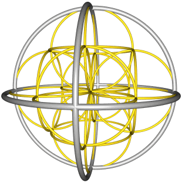

Macros are the key for designing complex scenes. Macros are object calls that can be inserted any number of times in the final scene, and can also be used for creating other macros. In this version, however, macros cannot be recursive.
The simplest form of macro definition equates a symbolic name to an object instance:
The class name can make reference either to a material or any kind of shape. For instance, we can define a macro for golden metals:
set goldenMetal = metal(gold, 0.5, 0.2);
SILLY also supports parameterized macros. This macro defines a sphere with unit radius and an arbitrary material:
set ball(center, stuff) = sphere(center, 1.0, stuff);
We can use these macros in the scene. This is a unit sphere centered at the origin of coordinates, made of a golden metal:
ball([0, 0, 0], goldenMetal);
Macros cannot be recursive, neither directly or indirectly. They also need to be defined before use.
There are two predefined macros in SILLY:
This script defines a wireframe model resembling a sphere:
objects
set gld = metal(gold, 0.12, 0.02, 0.9, 0.4, 10);
set slv = metal(silver, 0.06, 0.00, 0.9, 0.6, 10);
set base(p, r0, r1, m) = union(
torus(p, r0, r1, m),
rotate(90, 0, 0, torus(p, r0, r1, m)),
rotate(0, 0, 90, torus(p, r0, r1, m)));
base([0,0,0], 4, 0.1, slv);
translate(-2, 0, 0, base([0,0,0], 2, 0.05, gld));
translate(+2, 0, 0, base([0,0,0], 2, 0.05, gld));
translate(0, -2, 0, base([0,0,0], 2, 0.05, gld));
translate(0, +2, 0, base([0,0,0], 2, 0.05, gld));
translate(0, 0, -2, base([0,0,0], 2, 0.05, gld));
translate(0, 0, +2, base([0,0,0], 2, 0.05, gld));
end.
This script can be simplified substituting Translate by move, and Rotate by spin:
objects
set gld = metal(gold, 0.12, 0.02, 0.9, 0.4, 10);
set slv = metal(silver, 0.06, 0.00, 0.9, 0.6, 10);
set base(p, r0, r1, m) = union(
torus(p, r0, r1, m),
torus(p, r0, r1, m) spin 90^x,
torus(p, r0, r1, m) spin 90^z);
base(^0, 4, 0.1, slv);
base(^0, 2, 0.05, gld) move -2^x;
base(^0, 2, 0.05, gld) move +2^x;
base(^0, 2, 0.05, gld) move -2^y;
base(^0, 2, 0.05, gld) move +2^y;
base(^0, 2, 0.05, gld) move -2^z;
base(^0, 2, 0.05, gld) move +2^z;
end.
We can keep simplifying the script. This time, we can write a macro to make a double copy of a shape:
set DUP(object, distance) = union(
object move -distance,
object move +distance);
Now, the scene can be described this way:
base(^0, 4, 0.1, slv);
DUP(base(^0, 2, 0.05, gld), 2^x);
DUP(base(^0, 2, 0.05, gld), 2^y);
DUP(base(^0, 2, 0.05, gld), 2^z);
Home | Small Instantiation Language | Basic syntax | Data types | Expressions | Scenes | Shapes | Materials